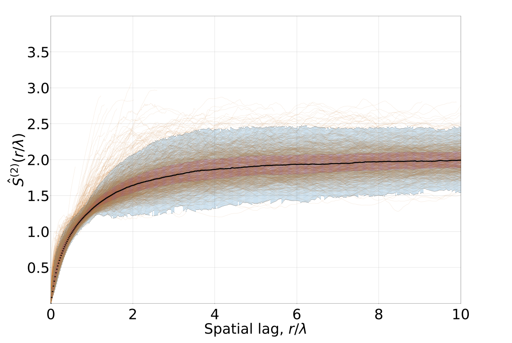

<!DOCTYPE html>
<html lang="en">
  <head>
    <meta charset="utf-8" />
    <meta name="viewport" content="width=device-width, initial-scale=1.0, maximum-scale=1.0, user-scalable=no" />

    <title></title>
    <link rel="stylesheet" href="dist/reveal.css" />
    <link rel="stylesheet" href="dist/theme/black.css" id="theme" />
    <link rel="stylesheet" href="plugin/highlight/monokai.css" />
	<link rel="stylesheet" href="css/layout.css" />
	<link rel="stylesheet" href="plugin/customcontrols/style.css">
	<link rel="stylesheet" href="plugin/chalkboard/style.css">


    <script defer src="dist/fontawesome/all.min.js"></script>

	<script type="text/javascript">
		var forgetPop = true;
		function onPopState(event) {
			if(forgetPop){
				forgetPop = false;
			} else {
				parent.postMessage(event.target.location.href, "app://obsidian.md");
			}
        }
		window.onpopstate = onPopState;
		window.onmessage = event => {
			if(event.data == "reload"){
				window.document.location.reload();
			}
			forgetPop = true;
		}

		function fitElements(){
			const itemsToFit = document.getElementsByClassName('fitText');
			for (const item in itemsToFit) {
				if (Object.hasOwnProperty.call(itemsToFit, item)) {
					var element = itemsToFit[item];
					fitElement(element,1, 1000);
					element.classList.remove('fitText');
				}
			}
		}

		function fitElement(element, start, end){

			const size = (end + start) / 2;
			element.style.fontSize = `${size}px`;

			if(Math.abs(start - end) < 1){
				return;
			}

			if(element.scrollHeight > element.offsetHeight){
				fitElement(element, start, size);
			} else {
				fitElement(element, size, end);
			}		
		}


		document.onreadystatechange = () => {
			fitElements();
			if (document.readyState === 'complete') {
				if (window.location.href.indexOf("?export") != -1){
					parent.postMessage(event.target.location.href, "app://obsidian.md");
				}
				if (window.location.href.indexOf("print-pdf") != -1){
					let stateCheck = setInterval(() => {
						clearInterval(stateCheck);
						window.print();
					}, 250);
				}
			}
	};


        </script>
  </head>
  <body>
    <div class="reveal">
      <div class="slides"><section  data-markdown><script type="text/template">
----
### Overview
----
- **Project 1**: Verifying von Karman similarity using ACE data
	- **1.1** Magnetic field only
	- **1.2** Elsasser fields (magnetic + velocity) 
- **Project 2**: Energy cascade and dissipation survey using MMS data 
- **Conclusions**
- **Future Plans**</script></section><section  data-markdown><script type="text/template">### **Project 1.1**
Verifying von Karman similarity hypothesis using ACE magnetic field data
<br>
<br>
(published in ApJL, 2021)</script></section><section ><section data-markdown><script type="text/template">### Motivation
- The **von Karman-Howarth equations** are the first entry in the hierarchy of moment equations
- Forms the basis of the famous **Kolmogorov "4/5" law** for evaluating the energy cascade rate
- Self-preservation of two-point correlation functions during decay `$\to$` von Karman decay law</script></section><section data-markdown><script type="text/template">### Karman-Howarth equations
`$$\frac{\partial}{\partial t}\left(u'^2 f\right) - \frac{u'^3}{r^4}\frac{\partial}{\partial r}\left(r^4 h\right) = \frac{2\nu u'^2}{r^4}\frac{\partial}{\partial r}\left(r^4 \frac{\partial f}{\partial r}\right)$$`
- `$u'\to$` square root of mean turbulent velocity
- `$f(r, t)\to$` longitudinal correlation
- `$g(r, t)\to$` lateral correlation
- `$h(r, t)\to$` triple correlation</script></section></section><section  data-markdown><script type="text/template">### What we do in this paper
- Evaluate the self-preservation hypothesis directly for magnetic autocorrelation functions
	-  at 1 AU
	-  Data obtained from: ACE (**A**dvanced **C**omposition **E**xplorer)
-  Perform two-stage normalization of the magnetic autocorrelation functions
-  Collapse of correlation functions to a well-defined form provides direct confirmation of von Karman similarity in the solar wind</script></section><section  data-markdown><script type="text/template">### Data
- ACE Level 2 MAG data
	- 1 s resolution, resampled to 1 min
	- **Range**: February 5, 1998 - March 30, 2008
- Current analysis consists of only fast wind samples (`$> 500$` km/s) `$\to$` 987 intervals of length 1 day</script></section><section  data-markdown><script type="text/template">### Reynolds decomposition
`$$\mathbf{B}(\mathbf{x}, t) = \overline{\mathbf{B}}(\mathbf{x}, t) + \mathbf{b}(\mathbf{x}, t)$$`
- `$\mathbf{B}(\mathbf{x}, t)\to$` Mean Magnetic field 
- `$\mathbf{b}(\mathbf{x}, t)\to$` Fluctuations in the magnetic field</script></section><section ><section data-markdown><script type="text/template">### Correlation functions
 `$$R(\mathbf{r}, t) = \langle\mathbf{b}(\mathbf{x}, t).\mathbf{b}(\mathbf{x}+\mathbf{r}, t)\rangle$$`
- Homogeneity, Isotropy `$\to$` `$R$` depends only on `$r$` </script></section><section data-markdown><script type="text/template">### Blackman-Tukey Algorithm
1. Left and right arrays: 
   `$$B_{i,\mathrm{l}} = B_i[0 : L-\tau], \quad B_{i, \mathrm{r}} = B_i[\tau: L]$$`
2. Correlation tensor: 
   `$$R_{ij}(\tau) = \langle B_{i, \mathrm{l}}B_{j, \mathrm{r}}\rangle - \langle B_{i, \mathrm{l}}\rangle\langle B_{j, \mathrm{r}}\rangle$$`
3. Autocorrelation: 
   `$$R(\tau) = R_{RR}(\tau) + R_{TT}(\tau) + R_{NN}(\tau)$$`</script></section><section data-markdown><script type="text/template">### Taylor Hypothesis
`$$r = V_{SW} \,\tau$$`
`$V_{SW}\to$` mean solar wind speed</script></section></section><section  data-markdown><script type="text/template">### Computing the correlation length
- **Method 1** : "1/e" method
	- Length `$\lambda_I$` at which `$$R_I(\lambda_I')/R_I (0 {}) = 1/e \approx 0.368$$`
- **Method 2** : Linear fit to logarithm of correlation function
	`$$\log\frac{R_I(\ell)}{R_I(0)} = -\frac{\ell}{\lambda_I}$$`</script></section><section  data-markdown><script type="text/template">### von Karman similarity hypothesis
- At any stage of decay, the correlation functions can be expressed as  (*de Karman, Howarth (1938)*)
  `$$R(r, t) = u^2(t)\hat{R}(r/L(t))$$`
- Constraint conditions `$\to$` **von Karman decay laws**
	`$$\frac{\mathrm{d}u^2}{\mathrm{d}t} = -\alpha \frac{u^3}{L}, \quad   \frac{\mathrm{d}L}{\mathrm{d}t} = \beta u
	$$`</script></section><section  data-markdown><script type="text/template">### Normalization
- With respect to energy:
	`$$R_I(r)\to R_I(r)/R_I(0)$$`
- With respect to the correlation length scale, `$\lambda$`:
	`$$R_I(r)\to \hat{R}_I(r/\lambda)$$`</script></section><section  data-markdown><script type="text/template">### Structure functions
`$$S^{(2)}(\mathbf{r}, t) = \langle(\mathbf{b}(\mathbf{x} + \mathbf{r}, t) - \mathbf{b}(\mathbf{x}, t))^2\rangle$$`
- Computing structure functions from autocorrelation functions
`$$\frac{S_I^{(2)}(r/\lambda_I)}{R_I(0)} = 2\frac{R_I(0 {}) - R_I(r/\lambda_I)}{R_I(0)}$$`</script></section><section  data-markdown><script type="text/template"><split even>
<p style="line-height: 0" class="reset-paragraph"></img></p>
<p style="line-height: 0" class="reset-paragraph"></img></p>
<p style="line-height: 0" class="reset-paragraph"></img></p>
</split>
<b>Figure</b>: Magnetic autocorrelation functions at different stages of normalization.</script></section><section  data-markdown><script type="text/template"><split even>
<p style="line-height: 0" class="reset-paragraph"></img></p>
<p style="line-height: 0" class="reset-paragraph"></img></p>
</split>
<b>Figure</b>: Twice-normalized structure functions on a linear scale(left) and log-log scale(right)</script></section><section ><section data-markdown><script type="text/template">### **Project 1.2**
Verifying von Karman similarity using Elsasser variables
<br>
</img><br>
(submitted to PRE)</script></section><section data-markdown><script type="text/template">### Elsasser variables
`$$\mathcal{Z}_\pm = \mathbf{V}\pm\mathbf{B}$$`
- `$\mathbf{V}\to$` velocity
- `$\mathbf{B}\to$` magnetic field (in Alfven units)</script></section></section><section  data-markdown><script type="text/template">### Data
- ACE Level 2 MAG data
	- 1 s resolution, resampled to 1 min
	- **Range**: February 5, 1998 - March 30, 2008
- ACE Level 2 SWEPAM data
	- 64 s resolution, resampled to 1 min
	- **Range**: February 5, 1998 - March 30, 2008
- Current analysis consists of only fast wind samples (`$> 500$` km/s) `$\to$` 987 intervals of length 1 day</script></section><section ><section data-markdown><script type="text/template">**Incompressible MHD equations**
`$$ \partial_t z_i^\pm = - (z_k^\mp \mp B_{0k})\partial_k z_i^\pm - \partial_i P + \nu \partial_k \partial_k z_i^\pm $$`
**Correlation functions**
`$$R_\pm({\bf r},t) = 
\langle {\bf z}^\pm({\bf x},t)\cdot {\bf z}^\pm({\bf x}+{\bf r},t)$$`
**Structure functions for Elsasser variables**
`$$S_\pm^{(2)}(r, t) = \langle(\mathbf{z}_\pm(\mathbf{x}+\mathbf{r}, t)-\mathbf{z}_\pm(\mathbf{x}))^2\rangle$$`</script></section><section data-markdown><script type="text/template">### Karman-Howarth equations for MHD
`$$\partial_t R_{ii}^\pm(r, t) = -2\frac{\partial Q^\pm(r)}{\partial r} - 4\frac{Q^\pm}{r} + 2\nu\left[\frac{\partial^2 R_{ii}^\pm}{\partial r^2} + \frac{2}{r}\frac{\partial R_{ii}^\pm}{\partial r}\right]
$$`
- `$R_{ii}^\pm\to$` Trace of the second-order correlation
- `$Q_{k}^\pm\to$` Triple correlations</script></section></section><section ><section data-markdown><script type="text/template">### von Karman similarity hypothesis for MHD
- At any stage of the decay, the Elsasser correlation function can be expressed as 
  `$$R_\pm(r, t) = Z_\pm^2(t)\hat{R}_\pm(r/L_\pm(t))$$`
  - `$\hat{R}_\pm\to$` universal correlation functions
<br></br>
- Similarly, for structure functions 
  `$$S_\pm^{(2)}(r, t) = Z_\pm^2(t) \hat{S}_\pm^{(2)}(r/L_\pm(t))$$`</script></section><section data-markdown><script type="text/template">### von Karman decay laws for MHD
`$$\frac{\mathrm{d}Z_\pm^2}{\mathrm{d}t} = -\alpha_\pm\frac{Z_\pm^2 Z_\mp}{L_\pm}$$`
`$$\frac{\mathrm{d}L_\pm}{\mathrm{d}t} = \beta_\pm Z_\mp$$`</script></section></section><section  data-markdown><script type="text/template"><split even>
<p style="line-height: 0" class="reset-paragraph"></img></p>
<p style="line-height: 0" class="reset-paragraph"></img></p>
<p style="line-height: 0" class="reset-paragraph"></img></p>
</split>
<b>Figure</b>: Autocorrelation functions of `$z_+$` at different stages of normalization.</script></section><section  data-markdown><script type="text/template"><split even>
<p style="line-height: 0" class="reset-paragraph"></img></p>
<p style="line-height: 0" class="reset-paragraph"></img></p>
<p style="line-height: 0" class="reset-paragraph"></img></p>
</split>
<b>Figure</b>: Autocorrelation functions of `$z_-$` at different stages of normalization.</script></section><section  data-markdown><script type="text/template"><br>
<b>Figure</b>: Structure functions of `$z_+$` and `$z_-$`. Inset shows zoomed out version.</script></section><section  data-markdown><script type="text/template"><br>
<b>Figure</b>: Sum of structure functions of `$z_+$` and `$z_-$` on a log-log scale.</script></section><section  data-markdown><script type="text/template">### **Project 2**
Energy dissipation and cascade survey using MMS data
<br>
(in progress)</script></section><section  data-markdown><script type="text/template">### Motivation
- Dissipation via the nonlinear energy cascade is not well understood.
- Major questions:
	- How to connect fluid-scale energy transfer rates with dissipation rates at kinetic scales?
	- What controls the fraction of dissipation on different charged species?</script></section><section  data-markdown><script type="text/template"><p style="line-height: 0" class="reset-paragraph"></img></p>
<b>Figure</b>: Simple cascade diagram based on incompressible equations.</script></section><section  data-markdown><script type="text/template">### What we do in this paper
- Compute energy decay rates, `$\epsilon_\mathrm{vK}$` at the largest scales using the **von Karman law**
- Compute energy cascade rates, `$\epsilon_\mathrm{PP98}$` using the **Politano-Pouquet Law**
- Compute the dissipation/heating rates, using the **Pi-D** approach, and connect MHD and kinetic measures of turbulent heating rate.</script></section><section  data-markdown><script type="text/template">### Data 
- 1841 magnetosheath intervals measured by MMS1  (*Li et al. 2020*)
	- September 2015 - June 2018
- Intervals after June 2018 have been discarded `$\to$` electron moments unavailable
- Around 1000 intervals were found suitable for computing correlation lengths, von Karman decay rates</script></section><section  data-markdown><script type="text/template">### Simulation details
- 2.5D PIC simulation using P3D code (*Zeiler et al. 2002*)
- Periodic domain 
	-  size `$L = 149.5648 d_i$`
	-  `$4096^2$` grid points
	-  `$3200$` particles of each species
	-  Ion-to-electron mass ratio, `$m_i/m_e = 25$`
	-  Uniform B-field = `$1.0$`, out-of-plane</script></section><section  data-markdown><script type="text/template">- At the correlation scales, the energy decay rate is given by the **von Karman decay law**: 
  `$$\epsilon_\mathrm{vK}^\pm = \alpha_\pm \frac{(Z^\pm)^2Z^\mp}{L_\pm}$$`
  - Energy decay rate: `$$\epsilon_\mathrm{vK} = \frac{1}{2}(\epsilon_\mathrm{vK}^+ + \epsilon_\mathrm{vK}^-)$$`</script></section><section ><section data-markdown><script type="text/template"> - The **Politano-Pouquet third-order law** can be used to estimate the energy cascade rate in the inertial range:
   `$$Y_\pm(\mathbf{r}) = -\frac{4}{3}\epsilon_\mathrm{PP98}^\pm r$$`
 - Energy cascade rate: `$$\epsilon_\mathrm{PP98} = \frac{1}{2}(\epsilon_\mathrm{PP98}^+ + \epsilon_\mathrm{PP98}^-)$$`</script></section><section data-markdown><script type="text/template"> `$$ Y_\pm(r) = \langle \hat{\mathbf{r}}.\Delta \mathbf{Z}^\pm(\mathbf{r}) |\Delta \mathbf{Z}^\pm(\mathbf{r})|^2\rangle \to$$` mixed third-order structure functions
 `$$\Delta \mathbf{Z}^\pm(\mathbf{\tau; t}) = \mathbf{Z}^\pm(t + \tau) - \mathbf{Z}^\pm(t)$$`</script></section></section><section  data-markdown><script type="text/template"></img> 
- **Figure** : Comparing the von Karman decay rates and the cascade rates derived from Politano-Pouquet law.
- We define `$\epsilon_\mathrm{MHD} = (\epsilon_\mathrm{vK} + \epsilon_\mathrm{PP98})/2$`, as the energy transfer rates at the MHD scales.</script></section><section  data-markdown><script type="text/template">### Vlasov-Maxwell equations
`$$\begin{align}
\partial_t \mathcal{E}_s^f + \nabla.(\mathcal{E}_s^f + \mathbf{P}_s.\mathbf{u}_s) &= (\mathbf{P}_s.\nabla).\mathbf{u}_s + n_s q_s \mathbf{u}_s.\mathbf{E} \\ \\
\partial_t \mathcal{E}_s^{th} + \nabla.(\mathcal{E}_s^{th}\mathbf{u}_s + \mathbf{h}_s) &= -(\mathbf{P}_s.\nabla).\mathbf{u}_s \\ \\
\partial_t \mathcal{E}^m + \frac{c}{4\pi}\nabla.(\mathbf{E}\times\mathbf{B}) &= -\mathbf{j}.\mathbf{E}
\end{align}
$$`</script></section><section  data-markdown><script type="text/template">- The pressure-strain interaction can be further decomposed:
  `$$-(\mathbf{P}.\nabla).\mathbf{u} = -p\theta - \Pi_{ij}D_{ij}$$`
	- `$p = \frac{1}{3}P_{ii}, \quad \theta = \nabla.\mathbf{u}$`
	- `$\Pi_{ij} = P_{ij} - p\delta_{ij}$`
	- `$D_{ij} = \frac{1}{2}\left(\partial_i u_j + \partial_j u_i\right) - \frac{1}{3}\theta\delta_{ij}$`
- `$-p\theta\to$` dilatation term `$\to$` compressive contribution to heating
- `$-\Pi_{ij}D_{ij}\to$` incompressive heating</script></section><section  data-markdown><script type="text/template"><br>
<b>Figure</b>: Time evolution of the total internal energy, the pressure-strain rate, and the Ohmic dissipation.
- We propose that the pressure-strain interaction is the dissipation function.
<br></br></script></section><section ><section data-markdown><script type="text/template">- Current paper tries to bridge the MHD and kinetic measures of turbulent heating rate, in a statistical manner.
<p align="center">

</p>
<b>Figure</b>: Comparison of average Pi-D and PS rates with energy decay rates estimated at MHD scales.</script></section><section data-markdown><script type="text/template">- Energy decay rates at MHD scales and heating through the incompressive channel (Pi-D) agree pretty well.
- However, the total heating (PS) doesn't do so, as MHD equations assume that the plasma is incompressible.</script></section></section><section  data-markdown><script type="text/template">### Relative ion and electron heating
- How does proton heating respond to the strength of the cascade?
- Hypothesis (*Matthaeus et al. 2016*): `$$\frac{Q_p}{Q_e}\sim \epsilon^{1/3}$$`
	- `$Q_p\to$` proton heating rate
	- `$Q_e\to$` electron heating rate
	- `$\epsilon = Q_p + Q_e \to$` cascade rate</script></section><section  data-markdown><script type="text/template"><br>
<b>Figure</b>: Relative proton-electron heating rate vs. total heating rate.</script></section><section  data-markdown><script type="text/template">### Connection of relative proton-electron heating to timescales
- The transfer of energy between fluid motion/EM field and random thermal motions of particles occurs through disruption of perpendicular gyromotion.
	- depends upon how much B changes over one gyroperiod at the scale of the particle gyroradius.
	- timescale over which a significant change in B occurs `$\to$` nonlinear timescale, `$\tau_\mathrm{nl}(\ell) = \frac{\ell}{\delta B_\ell}$`</script></section><section  data-markdown><script type="text/template">- **Hypothesis**: `$$\frac{Q_p}{Q_e}\sim \frac{\tau_\mathrm{ci}}{\tau_\mathrm{nl}(d_i)}$$`
- `$\tau_\mathrm{ci}\to$` ion cyclotron time, `$\tau_\mathrm{nl}(\ell)\to$` nonlinear timescale at length scale `$\ell$`</script></section><section  data-markdown><script type="text/template"><br>
<b>Figure</b>: Relative proton-electron heating vs. ratio of ion cyclotron time to nonlinear time at `$d_i$`</script></section><section ><section data-markdown><script type="text/template">### Conclusion
- In **Project 1**, we verified the *von Karman similarity hypothesis* in the solar wind using magnetic field and velocity data measured by ACE.
- In **Project 2**, we use data from MMS observations to show that:
	- `$\epsilon_\mathrm{vK}\approx\epsilon_\mathrm{PP98}$`
	- relative proton-electron heating rate increases with the total heating rate,
	- the relative proton-electron heating is controlled by the ratio of the proton cyclotron time to the nonlinear time at the ion inertial scale.</script></section><section data-markdown><script type="text/template">- These projects help validate some of the key physics underlying turbulence theory in MHD.
	- **Project 1** provides an empirical confirmation of the applicability of the von Karman similarity hypothesis to interplanetary magnetic field observations.
	- **Project 2** validates the idealized picture of energy cascade and connects the energy transfer rates at fluid scales to the dissipation rates at kinetic scales.</script></section></section><section  data-markdown><script type="text/template">### Future plans
- Verify the similarity hypothesis for near-Sun data using PSP
	- Is it valid to use Taylor hypothesis in this case? (*Chhiber et al. 2019*)
- Investigate the effect of cross-helicity in the decay of correlation functions of `$z_+$` and `$z_-$`
- Currently involved in a group study looking at the anisotropy of the correlation length scales as a function of heliocentric distance
	- uses PSP, ACE, WIND and Voyager data</script></section><section  data-markdown><script type="text/template"># Thank you!
 Slides can be found here:
<br>
 https://sohom-ud.github.io/Presentations/
</script></section></div>
    </div>

    <script src="dist/reveal.js"></script>

    <script src="plugin/markdown/markdown.js"></script>
    <script src="plugin/highlight/highlight.js"></script>
    <script src="plugin/zoom/zoom.js"></script>
    <script src="plugin/notes/notes.js"></script>
    <script src="plugin/math/math.js"></script>
	<script src="plugin/mermaid/mermaid.js"></script>
	<script src="plugin/menu/menu.js"></script>
	<script src="plugin/customcontrols/plugin.js"></script>
	<script src="plugin/chalkboard/plugin.js"></script>

    <script>
      function extend() {
        var target = {};
        for (var i = 0; i < arguments.length; i++) {
          var source = arguments[i];
          for (var key in source) {
            if (source.hasOwnProperty(key)) {
              target[key] = source[key];
            }
          }
        }
        return target;
      }

      // default options to init reveal.js
      var defaultOptions = {
        controls: true,
        progress: true,
        history: true,
        center: true,
        transition: 'default', // none/fade/slide/convex/concave/zoom
        plugins: [
          RevealMarkdown,
          RevealHighlight,
          RevealZoom,
          RevealNotes,
          RevealMath.MathJax3,
		  RevealMermaid,
		  RevealCustomControls,
		  RevealMenu,
		  RevealChalkboard, 
        ],

		mathjax3: {
			mathjax: 'plugin/math/mathjax/tex-mml-chtml.js',
		},

		customcontrols: {
			controls: [
				{id: 'toggle-overview',
				title: 'Toggle overview (O)',
				icon: '<i class="fa fa-th"></i>',
				action: 'Reveal.toggleOverview();'
				},
				{ icon: '<i class="fa fa-pen-square"></i>',
				title: 'Toggle chalkboard (B)',
				action: 'RevealChalkboard.toggleChalkboard();'
				},
				{ icon: '<i class="fa fa-pen"></i>',
				title: 'Toggle notes canvas (C)',
				action: 'RevealChalkboard.toggleNotesCanvas();'
				},
			]
		},
		menu: {
			loadIcons: false
		}
      };

      // options from URL query string
      var queryOptions = Reveal().getQueryHash() || {};

      var options = extend(defaultOptions, {"width":960,"height":700,"margin":0.01,"controls":true,"progress":true,"slideNumber":true,"transition":"slide","transitionSpeed":"fast"}, queryOptions);
    </script>

    <script>
      Reveal.initialize(options);
    </script>
  </body>
</html>
